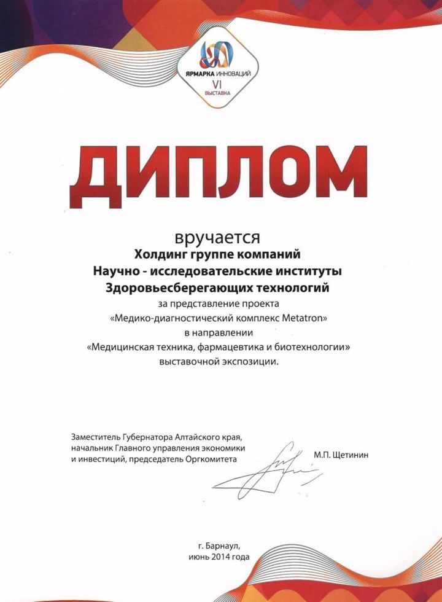
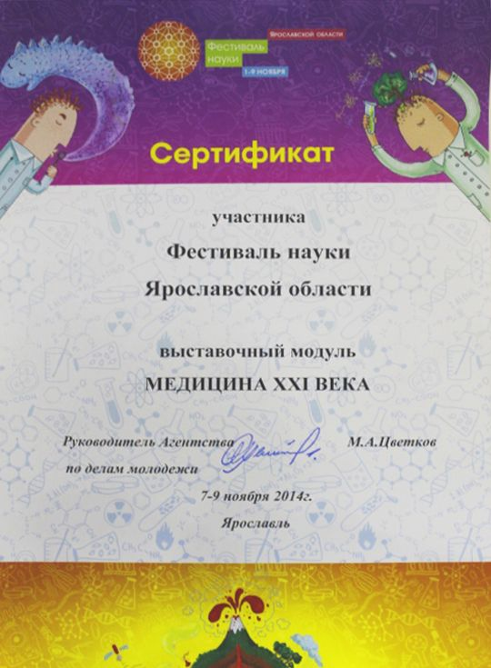
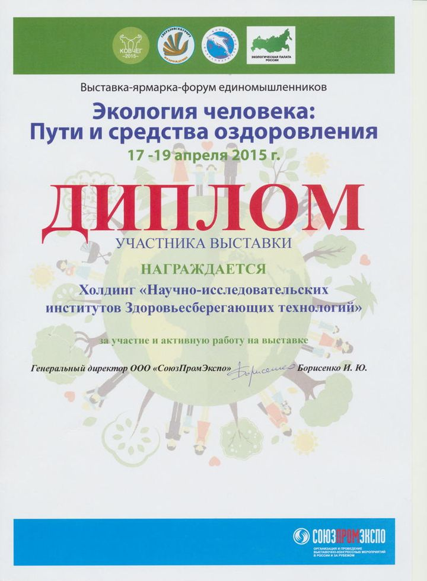

Участие в Международной медицинской выставке Новосибирского НИИ ЗСТ.

VI выставка «Ярмарка инноваций. Алтайский край - 2014».(Диплом)

Медицинская выставка «Урал-Медика-2014» в Челябинске. (Диплом)

Ярославский НИИ ЗСТ на Фестивале науки. (Сертификат)

Екатеринбургский НИИ ЗСТ на выставке «Экология человека: пути и средства оздоровления». (Диплом)

Средство и способ лечения сахарного диабета. (Патент)

Южно-Уральский НИИ ЗСТ на выставке «Уралстоматология. Медицина для здоровья и красоты»

Участие НИИ ЗСТ в Межрегиональной выставке в г. Чебоксары.